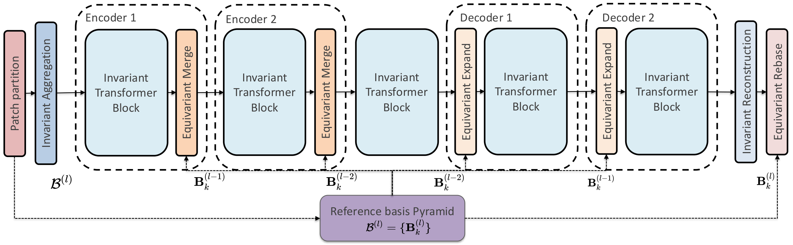

ReViT is the first Vision Transformer framework that enforces strict rotational equivariance on grid-based physical fields. By mapping scalar and vector inputs into locally invariant representations derived from physics-based canonical bases, ReViT enables standard self-attention without symmetry violations—yielding significant accuracy gains across 2D and 3D PDE benchmarks.
Physics obeys strict symmetries like rotational equivariance. However, the standard Transformer architectures widely used in physics foundation models do not enforce these constraints by construction. We introduce ReViT, a rotationally equivariant Vision Transformer framework for neural PDE solvers operating on grid-based physical fields that strictly enforces rotational equivariance.
ReViT maps scalar and vector inputs into locally invariant representations derived from physics-based canonical bases, enabling the use of standard self-attention without symmetry violations. Built on a hierarchical Swin-style backbone with a precomputed reference basis pyramid, ReViT preserves equivariance across multi-scale operations.
We evaluate ReViT on a wide range of 2D and 3D PDE benchmarks, such as Magnetohydrodynamics and Turbulent Channel Flows, demonstrating significant gains over state-of-the-art baselines. ReViT exhibits strong generalization, and reduces MSE by up to 65% compared with the best-performing alternatives.
We consider a physical field \(\mathbf{f}: \Omega \rightarrow \mathcal{V}\) on a spatial domain \(\Omega \subset \mathbb{R}^d\). For a vector field \(\mathbf{u}\), the rotation group acts on both the domain and the value: \([L_g \mathbf{u}](x) = \mathbf{R}(g)\mathbf{u}(\mathbf{R}(g)^{-1}x)\). A neural network \(\Phi\) is equivariant if \(\Phi(L_g \mathbf{u}) = L_g \Phi(\mathbf{u})\). We identify three distinct mechanisms by which standard ViTs violate rotational equivariance:
By adapting local canonicalization to ViTs, we decouple basis transformations from feature learning, solving challenges C1–C3. The model alternates between invariant processing (features in local canonical frames) and global transitions (physical basis transformations). The architecture consists of three stages: (1) Local Canonicalization, (2) Invariant Transformer Processing, and (3) Equivariant Decoding.

Figure 2. Overview of the ReViT architecture. The hierarchical encoder-decoder alternates between invariant processing (blue) and global transitions (orange). The Reference Basis Pyramid (purple) supplies local bases \(\mathcal{B}^{(l)}\) to mediate resolution changes (Merge, Expand) and the final Equivariant Rebase.
Interactive Local Rebasing
The local basis is built from a patch-aggregated vector and used to rebase global vectors into local coordinates. When the field rotates, the basis co-rotates, so projecting vectors with \(\mathbf{B}_i^{\mathsf T}\) keeps the local representation stable.
For each patch \(P_i\), we compute a Local Canonical Basis \(\mathbf{B}_i \in SO(d)\) deterministically from the field values. Vectors are projected into local frames: \(\mathbf{u}^{\text{local}}_{i,k} = \mathbf{B}_i^T \mathbf{u}_k\). This is provably invariant:
In 3D, the basis is derived from the mean velocity \(\bar{\mathbf{u}}_i\) and mean vorticity \(\bar{\boldsymbol{\omega}}_i\), using stabilized analytical orthogonalization based on sequential cross-products.
Instead of flattening patches (which breaks under rotation-induced permutations, C1), we treat the projected local vectors as a set of invariant features \(\mathcal{X}_i = \{\mathbf{h}_{i,k} \mid k \in P_i\}\) where \(\mathbf{h}_{i,k} = \text{MLP}(\mathbf{u}^{\text{local}}_{i,k})\). A Set-Transformer with a learnable query token aggregates them: \(\text{Agg}(\pi(\mathcal{X}_i)) = \text{Agg}(\mathcal{X}_i)\), ensuring rotation-invariant tokens.
We project displacement vectors into the query token's local basis: \(\mathbf{p}_{ij \to i} = \mathbf{B}_i^T(x_j - x_i)\). This is invariant to global rotations while preserving local anisotropy. The modified self-attention becomes:
Local predictions are lifted back to global coordinates: \(\mathbf{u}'_{i} = \mathbf{B}_i \cdot \mathbf{z}^{\text{local}}_{i}\). Since \(\mathbf{z}^{\text{local}}\) is invariant and \(\mathbf{B}_i\) co-rotates with the input, the output is strictly equivariant.
A pyramid of local canonical bases \(\mathcal{B}^{(l)} = \{\mathbf{B}_k^{(l)}\}\) is pre-computed at each resolution \(l\). Resolution changes use a “globalize–resample–localize” procedure, ensuring rotation-invariance across all scales.
Interactive Shifted Windows
ReViT leverages the permutation-equivariance of self-attention applied in each window, so the only thing the shifted-window pipeline needs to guarantee for global rotation equivariance is this: the set of tokens that share a window is the same in the normal lane and in the rotated lane. No attention is drawn here — the fake numbers label token identity so you can trace them through the cycle. Step through the stages to watch which tokens land in which window at each moment where attention would run.
Stage 1 — Input 8×8 partitioned into four 4×4 windows.
Equivariance Analysis:
ReViT achieves exact chiral octahedral group \(O\) equivariance and approximate \(SO(3)\) equivariance. The gap stems from grid-based constraints: resampling introduces interpolation bias, and discretization artifacts arise from fixed patch/window boundaries. Unlike \(\frac{\pi}{2}\) rotations, arbitrary rotations break grid symmetry. Data augmentation helps dampen these artifacts.
ReViT achieves SOTA accuracy (98.26%) while delivering a ~4× speedup and a ~53× memory reduction (1.81 GB vs. 95.5 GB) compared to lifted baselines. The baselines' inefficiency stems from the lifting operation that expands self-attention complexity to \(\mathcal{O}(N^2 |\mathcal{H}|^2)\).
| Model | Acc (%) | Train (ms) | Infer (ms) | Mem (GB) |
|---|---|---|---|---|
| GSA-Nets(\(R_4\)) | 97.46 | 298.8±0.9 | 110.0±0.1 | 5.27 |
| GSA-Nets(\(R_8\)) | 97.90 | 144.2±2.1 | 65.2±0.2 | 29.9 |
| GSA-Nets(\(R_{12}\)) | 97.97 | 272.6±0.6 | 118.7±0.5 | 95.5 |
| GE-ViT(\(R_{12}\)) | 98.01 | 281.0±0.7 | 118.9±0.3 | 95.5 |
| ReViT (Ours) | 98.26 | 67.7±0.2 | 31.0±0.7 | 1.81 |
ReViT achieves the lowest MSE (\(\approx 10^{-4}\)) among all compared methods. It consistently outperforms the non-equivariant PDETrans, highlighting the contribution of equivariant mechanisms. The computational overhead of ReViT is comparable to PDETrans with only 11.6% increase, yet delivers 37.2% MSE reduction.
We analyze prediction accuracy over 20 rollout steps across angular intervals of \(\frac{\pi}{12}\) within the range \((0, \pi)\), focusing on orthogonal angular pairs (\(\theta\) and \(\theta + \frac{\pi}{2}\)). ReViT demonstrates perfect equivariance for all orthogonal pairs with exactly +0.0% relative error, regardless of input angle \(\theta\). PDETrans shows high variance (up to +162.8%) on unseen angles.
ReViT achieves the lowest MSE (\(1.26 \times 10^{-2}\)) and highest \(R^2\) (0.97), outperforming the strongest baseline (AViT) by approximately 44% in MSE. ReViT preserves sharp, high-frequency structures of the magnetic field and velocity eddies, remaining virtually indistinguishable from the reference.
TCF represents a symmetry-starved regime with severe spatial anisotropy. ReViT performs the best with MSE of \(0.21 \times 10^{-2}\) and \(R^2\) of 0.96, representing a 65% error reduction compared to the next best models.
Metrics computed over the full chiral octahedral group \(O\) with three different seeds, reported as mean ± std:
| Model | MHD | TCF | ||
|---|---|---|---|---|
| MSE (\(\times 10^{-2}\)) ↓ | \(R^2\) ↑ | MSE (\(\times 10^{-2}\)) ↓ | \(R^2\) ↑ | |
| AFNO | 16.40 ± 42.30 | 0.60 ± 1.00 | 28.40 ± 56.40 | -3.79 ± 9.49 |
| P3D | 10.20 ± 6.24 | 0.73 ± 0.15 | 5.72 ± 2.94 | 0.04 ± 0.05 |
| UNet3D | 3.64 ± 0.93 | 0.90 ± 0.03 | 7.12 ± 3.67 | -0.20 ± 0.62 |
| Swin3D | 3.58 ± 1.19 | 0.90 ± 0.03 | 0.60 ± 0.22 | 0.90 ± 0.04 |
| AViT | 2.20 ± 0.36 | 0.94 ± 0.01 | 0.60 ± 0.23 | 0.90 ± 0.04 |
| ReViT-3D (Ours) | 1.26 ± 0.14 | 0.97 ± 0.01 | 0.21 ± 0.00 | 0.96 ± 0.00 |
A systematic ablation study identifies the necessity of each ReViT component. Removing any single component leads to measurable degradation in both accuracy and equivariance.
@inproceedings{ReViT2026,
title = {{ReViT}: Rotational-equivariant Vision Transformers
for Neural {PDE} Solvers},
author = {Hao Wei and Bjoern List and Nils Thuerey},
booktitle = {International Conference on Machine Learning (ICML)},
year = {2026},
}